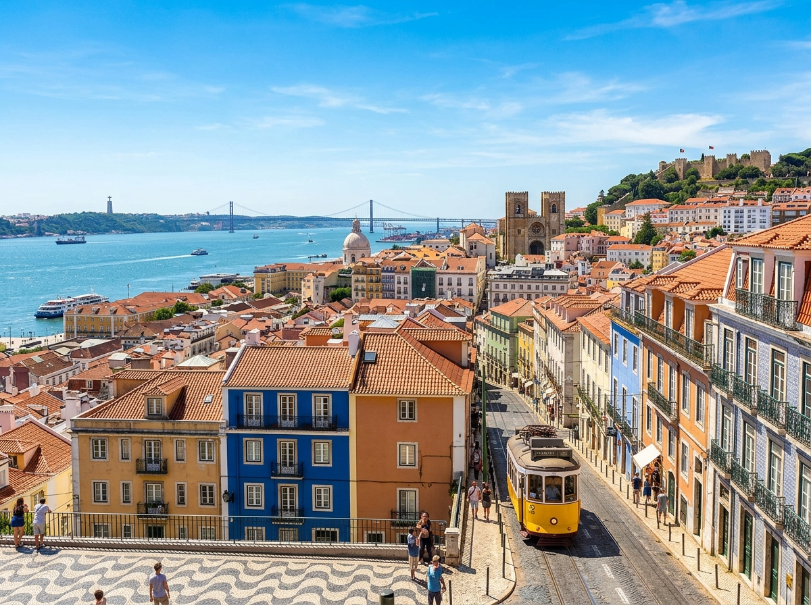
Hier stehen die wichtigsten Daten zu deinem Land. In der App baust du daraus deinen eigenen Steckbrief.
| Hauptstadt | Lissabon |
| Kontinent | Europa |
| Sprache | Portugiesisch |
| Währung | Euro |
| Einwohner | etwa 10 Millionen Menschen |
| Fläche | etwa 92.000 km², ein bisschen größer als Bayern |
| Großer Berg / Gewässer | im Westen und Süden der Atlantische Ozean; höchster Berg der Pico auf den Azoren, rund 2.350 Meter hoch |
| Nachbarländer | nur Spanien, im Norden und im Osten |
In Portugal gibt es viele besondere Orte. Diese vier solltest du kennen.
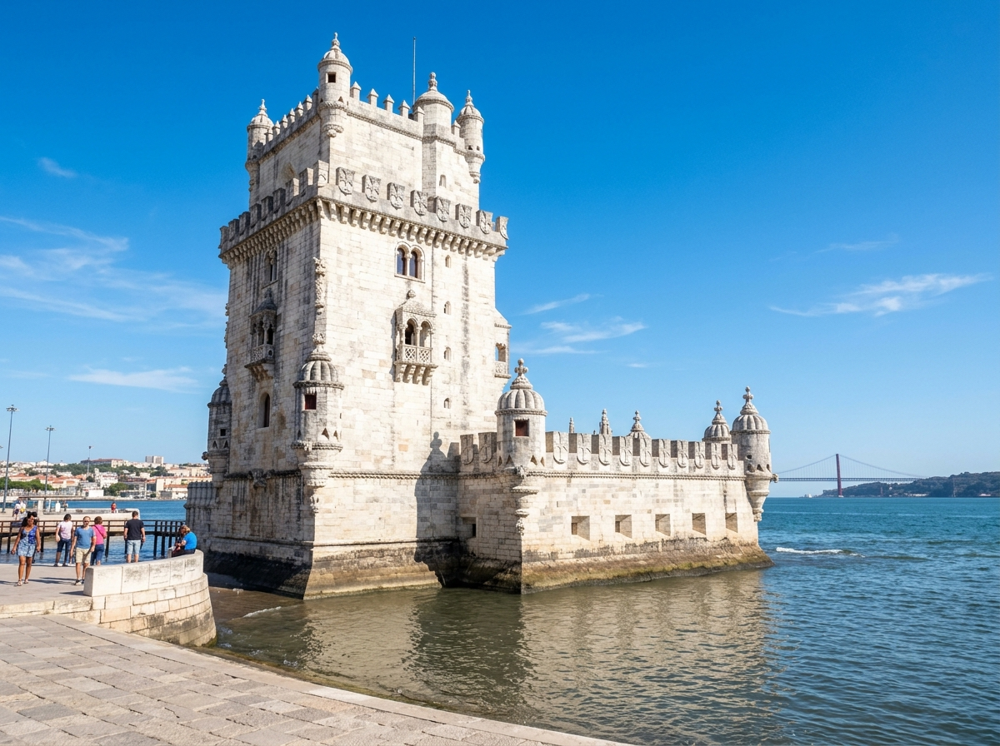
Turm von BelémDer Turm von Belém steht in Lissabon direkt am Wasser. Er ist ganz aus weißem Stein gebaut. Vor etwa 500 Jahren passte hier ein Wächter auf die großen Schiffe auf. Damals fuhren die Portugiesen mit ihren Schiffen weit über das Meer.
Grüne Wörter für die Appaus weißem Steinin Lissabonam Wasseralte SchiffeWächter
SintraSintra ist eine kleine Stadt in den Hügeln nahe bei Lissabon. Dort stehen bunte Schlösser, die aussehen wie aus einem Märchen. Das bekannteste Schloss ist knallbunt angemalt. Es leuchtet schon von weitem in Rot und Gelb.
Grüne Wörter für die Appbunte Schlösserin den Hügelnwie im Märchenknallbuntnahe Lissabon
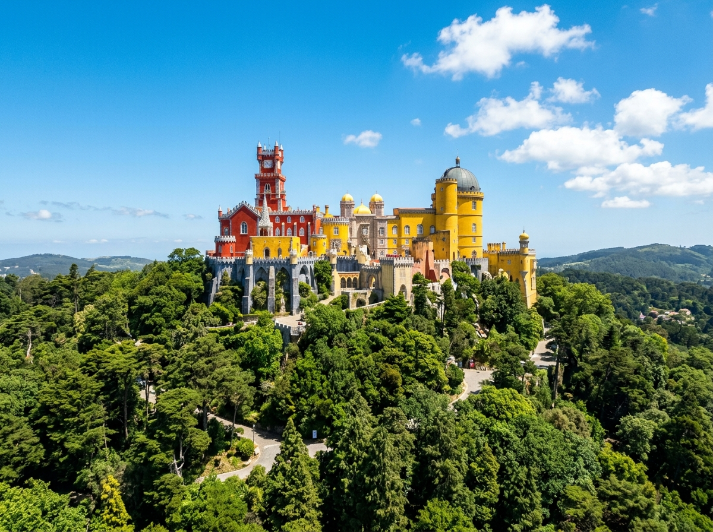
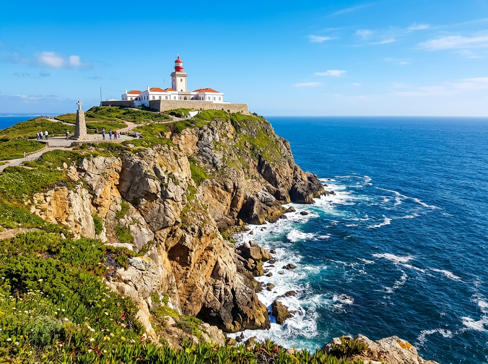
Kap RocaDas Kap Roca ist der westlichste Punkt von Europa. Weiter nach Westen geht das Festland nicht mehr. Hier stehen die Menschen auf einer hohen Felsklippe. Vor ihnen liegt nur noch der weite Atlantische Ozean.
Grüne Wörter für die Appwestlichster PunktFelsklippeAtlantikRand von Europaweites Meer
AlgarveDie Algarve ist eine Küste im Süden von Portugal. Dort gibt es goldgelbe Felsen und lange Sandstrände. Im Meer haben sich versteckte Höhlen gebildet. Viele Menschen kommen hierher zum Baden und in die Sonne.
Grüne Wörter für die AppKüste im Südengoldgelbe FelsenSandsträndeHöhlenBaden
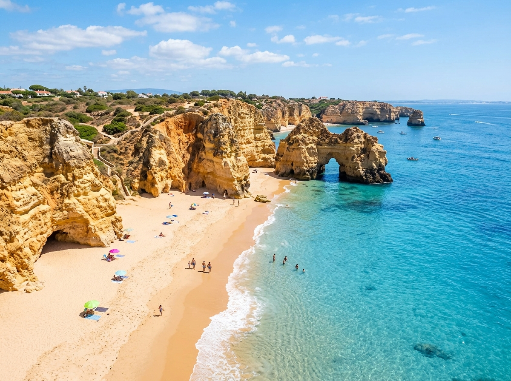
In Portugal leben Tiere, die du bei uns selten oder gar nicht findest.
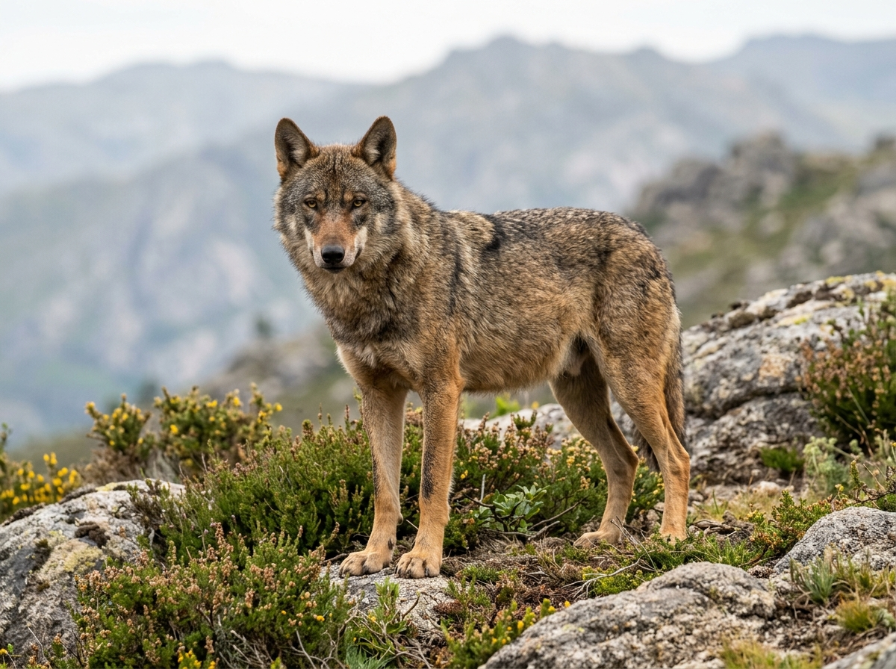
Iberischer WolfDer Iberische Wolf ist ein wilder Wolf. Er lebt vor allem im Norden von Portugal. Sein Fell ist graubraun. Wölfe leben zusammen im Rudel. Sie sind sehr scheu und verstecken sich vor den Menschen.
Grüne Wörter für die Appwilder Wolfim Nordengraubraunim Rudelsehr scheu
WeißstorchIn Portugal leben sehr viele Weißstörche. Sie bauen große Nester aus Ästen. Diese Nester liegen oben auf Dächern und auf hohen Masten. Den ganzen Sommer über ziehen die Störche dort ihre Jungen groß.
Grüne Wörter für die Appviele Störchegroße Nesterauf Dächernauf Mastenweiß mit rotem Schnabel
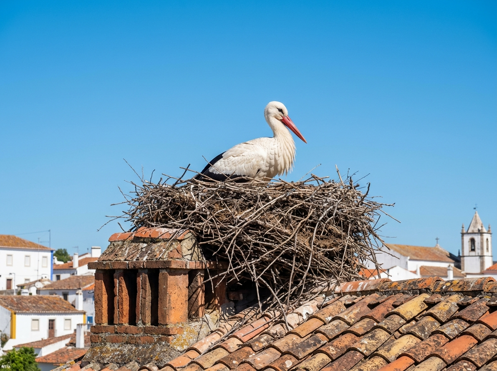
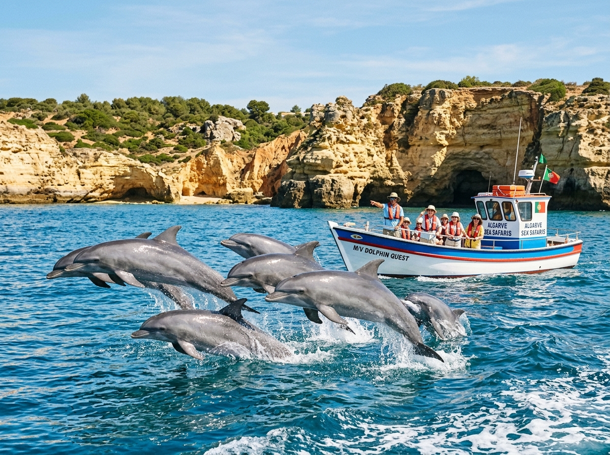
DelfinVor der Küste von Portugal schwimmen viele Delfine. Sie leben in Gruppen und springen gern aus dem Wasser. Mit kleinen Booten kann man hinausfahren. Dann beobachtet man die Delfine ganz aus der Nähe.
Grüne Wörter für die Appim Meerin Gruppenspringenvom Boot beobachtenvor der Küste
In der App kannst du beim Essen das Foto nehmen oder dein Gericht selbst malen.
Pastéis de NataPastéis de Nata sind kleine Törtchen aus Blätterteig. In der Mitte steckt eine cremige Füllung aus Vanille. Sie kommen ursprünglich aus Lissabon. Heute isst man sie in ganz Portugal sehr gern.
Grüne Wörter für die Appkleine TörtchenBlätterteigVanille-Cremeaus Lissabonsüß
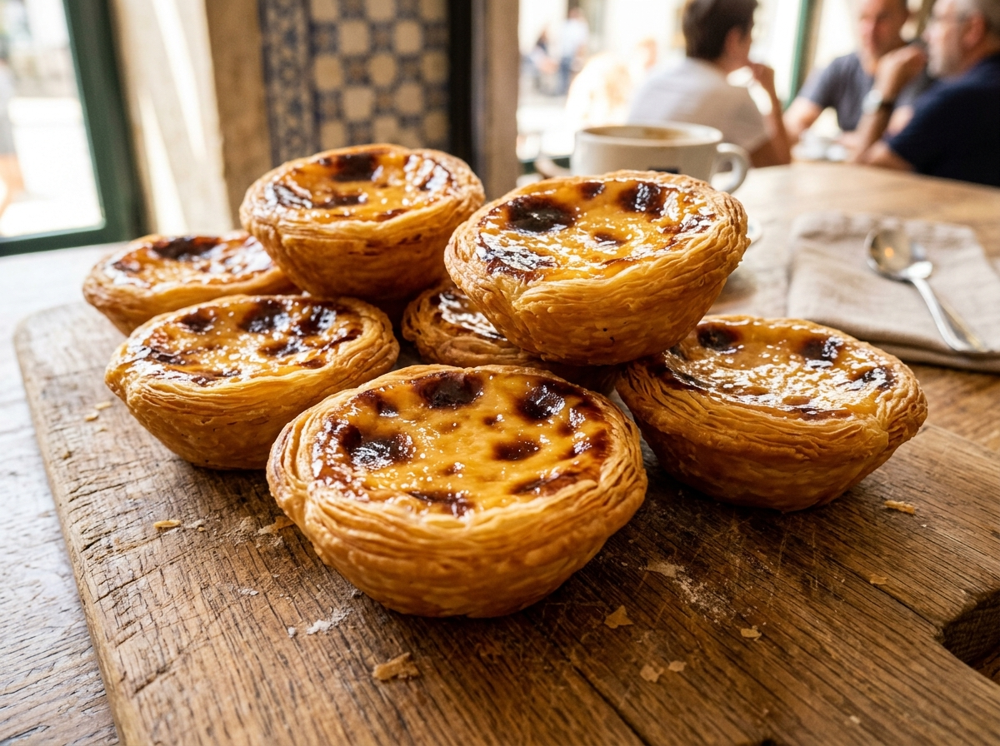
BacalhauBacalhau ist getrockneter und gesalzener Kabeljau, also ein Fisch. Die Portugiesen lieben ihn sehr. Sie sagen, es gibt ihn auf 365 Arten, also für jeden Tag im Jahr anders. So wird er nie langweilig.
Grüne Wörter für die Appgetrockneter FischKabeljaugesalzen365 Artensehr beliebt
Piri-Piri-HähnchenDas Piri-Piri-Hähnchen wird über dem Feuer gegrillt. Darüber kommt eine scharfe Sauce aus kleinen roten Chilis. Diese Chilis heißen Piri-Piri. Vor allem im Süden von Portugal isst man das Gericht oft.
Grüne Wörter für die Appgegrilltes Hähnchenscharfe Saucerote ChilisPiri-Piriim Süden
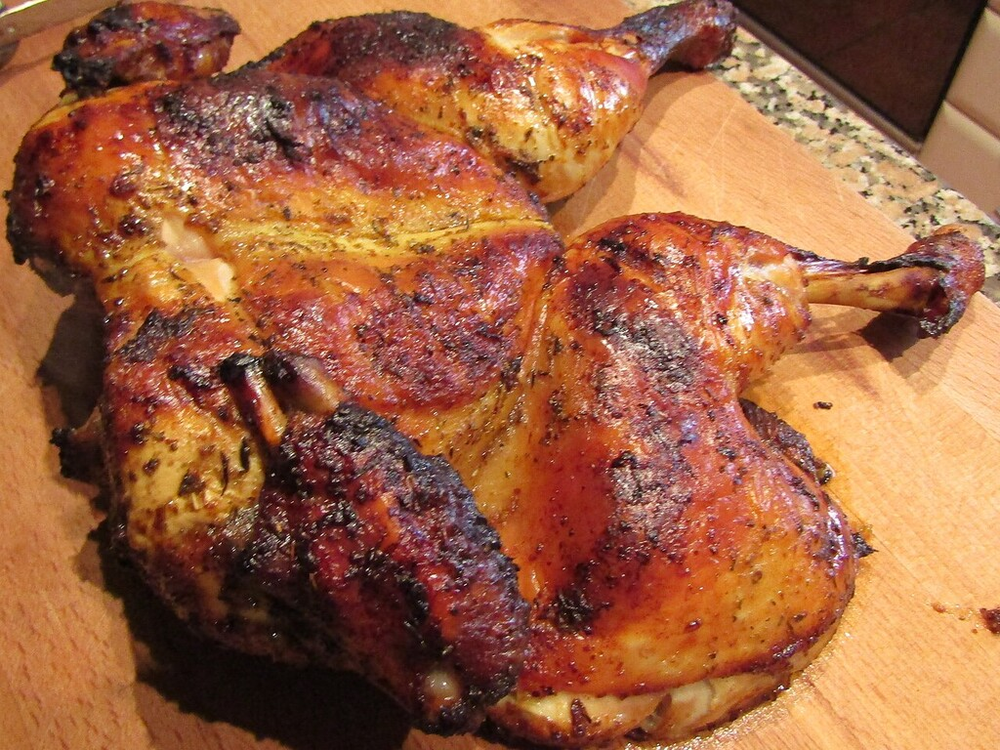
⚽ Gut zu wissen
Die Fußball-Nationalmannschaft von Portugal hat den Spitznamen Seleção. Sie spielt im roten Trikot, dazu kommt etwas Grün. Bei der WM 2026 ist Portugal wieder dabei und spielt in der Gruppe K. Das Team gilt als eine der stärksten Mannschaften aus Europa und wurde 2016 sogar Europameister.
Grüne Wörter für die Approtes Trikotetwas Grünbei der WM 2026 dabeistark in EuropaEuropameister 2016
🌟 Profi-Wissen
Cristiano Ronaldo ist einer der bekanntesten Fußballer der Welt. Er hat mehr Länderspieltore geschossen als jeder andere Spieler weltweit. Portugal wurde 2016 Europameister. Eine frühere Legende heißt Eusébio, er spielte bei der WM 1966 brillant.
Grüne Wörter für die AppCristiano Ronaldomeiste Länderspieltore weltweitEusébio 1966 LegendeEM-Sieger 20168. WM-Teilnahme
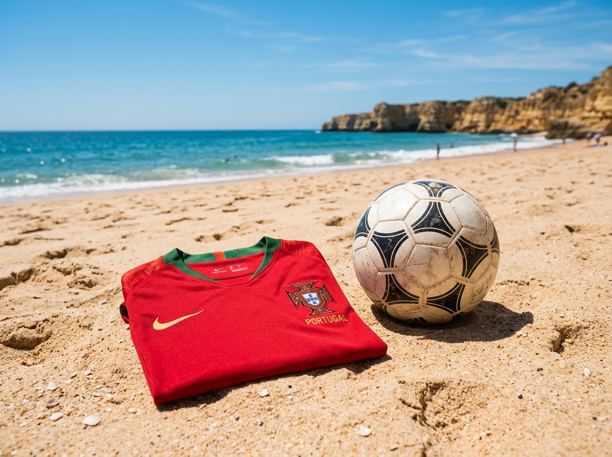
Schule in PortugalIn Portugal gehen die Kinder von Montag bis Freitag zur Schule, so wie bei uns. Viele Schulen tragen eine Schuluniform, also alle die gleiche Kleidung. Der Unterricht dauert oft bis in den Nachmittag. Danach essen die Kinder warm in der Schule.
Grüne Wörter für die AppMontag bis FreitagSchuluniformgleiche Kleidungbis NachmittagMittagessen in der Schule
Leben am MeerSehr viele Familien in Portugal wohnen nah am Atlantik. Darum spielen die Kinder oft am Strand. Manche lernen schon früh das Surfen auf den Wellen. Frischer Fisch vom Meer kommt fast jeden Tag auf den Tisch.
Grüne Wörter für die Appnah am Meeram Strand spielenAtlantikSurfenfrischer Fisch
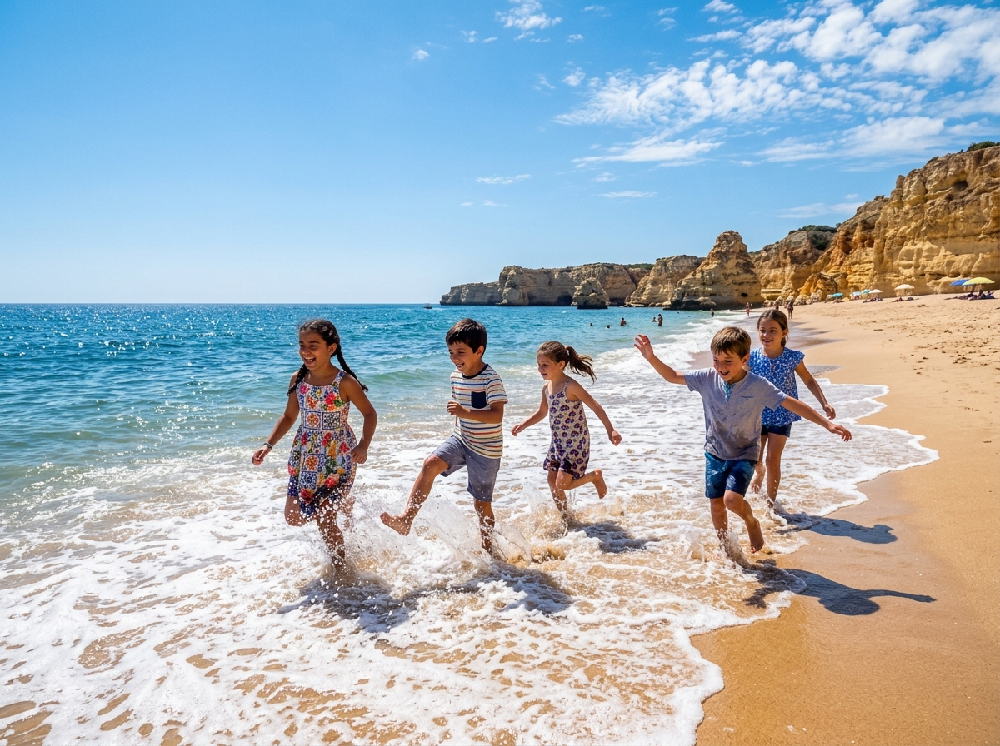